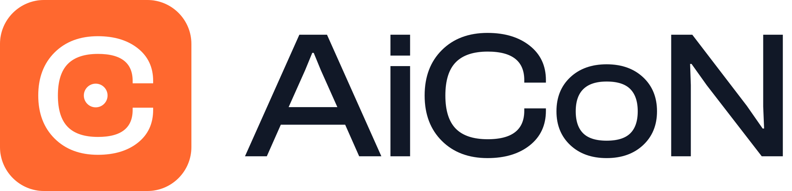

Home / About AiCoN


What is AiCoN?
AiCoN is a free guide to useful tech and opportunities for people in India and Kerala. We turn complicated product pages and official notices into simple steps you can use.
What will you find here?
AI tools, phone apps, computer software, digital safety, scholarships, government services and student events. Some guides help you try something new. Others help you avoid a cost, a scam or a missed condition.
- AI tools
- Apps
- PC software
- Digital safety
- Scholarships
- Government services
- Student events
What gets checked?
We read official pages and notices, check links, and look for costs, limits, India availability and privacy details where they matter. Each guide explains its own sources and the date checked.
A checked source is not the same as hands-on testing. If we did not install an app, submit a form or confirm a detail, we say so. Prices, deadlines and services can change after a guide is published. Check the official page before paying, applying or sharing personal information.
How should I use a guide?
- Read the short introduction to see whether it fits your need.
- Check the price, eligibility and important limits.
- Follow the steps, then open the official source for the latest details.
Mission
AiCoN helps students and everyday users across Kerala and India discover free, verified technology tools, scholarships, and government schemes. Every guide is based on official sources, contains no referral links, and clearly explains what is free and what comes with a cost.
Founder
AiCoN was founded by Muhammed Salman CC, a postgraduate student with an interest in electronics, embedded systems, and robotics. He launched AiCoN as a WhatsApp channel in December 2024 to make reliable technology resources and opportunities more accessible to everyone.
Ads and Monetization
AiCoN currently operates without advertisements or affiliate links. Maintaining user trust and providing unbiased information take priority over monetization. Potential revenue models may be considered in the future, once the platform has established a substantial audience, without compromising these principles.
Comments and Community
Public comments are disabled for now to reduce spam and moderation overhead. Users can ask questions and engage with AiCoN through its existing WhatsApp and Telegram channels.
Newsletter
A separate newsletter is not planned at this stage. The existing WhatsApp and Telegram channels already serve as the primary channels for updates and announcements.
How can I follow AiCoN?
The website has the detailed guides. Follow the WhatsApp channel or Telegram for short updates and links.
Follow on WhatsApp Follow on Telegram Browse the guides
Email: aicon4tech@gmail.com · aicon4tech@proton.me
Found a mistake?
Send the guide link and what needs changing to aicon4tech@proton.me. We want the guide to be useful and clear, not to pretend that every detail is certain.